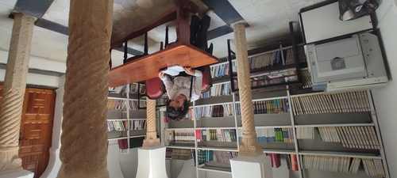

    <section class="about" id="about">
      <div class="row">
        <h2>About Me</h2>
        <div class="about__content">
          <div class="about__text">
            <!-- Replace the below paragraph with info about yourself -->
            <p>
              Je suis ingénieure optique avec une excellente formation pluridisciplinaire de base: 
              optique, électronique, mécanique et informatique et une grande expérience en science des données.
            </p>
            <!-- Provide a link to your resume -->
            <a href="#" class="btn">My Resume</a>
          </div>

          <div class="about__photo-container">
            <!-- Add a nice photo of yourself -->
            
          </div>
        </div>
      </div>
    </section>